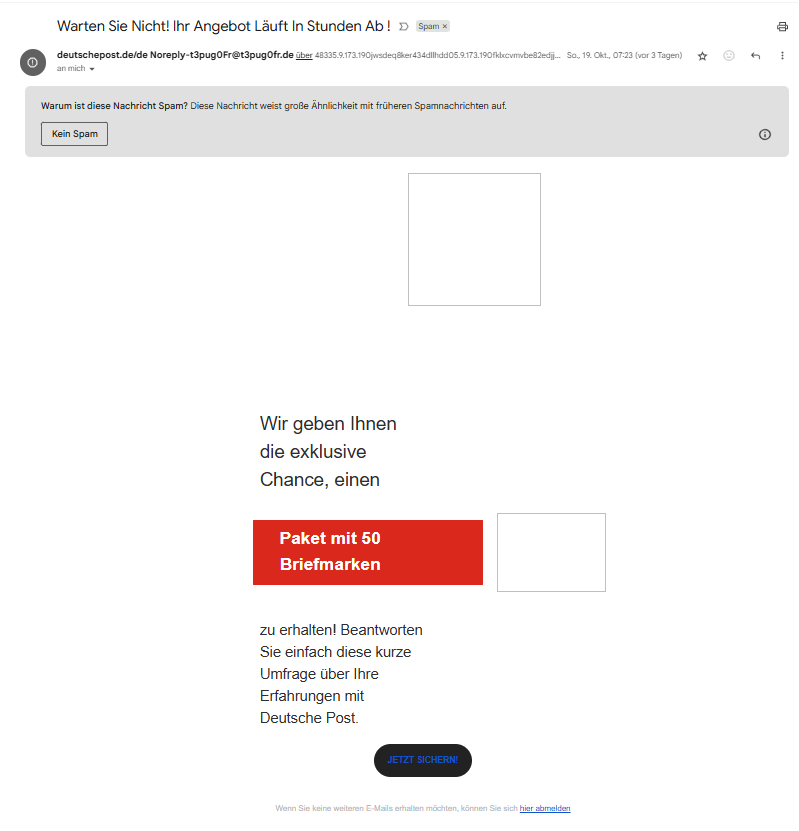
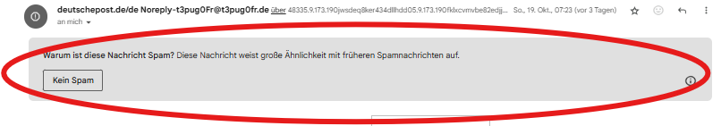
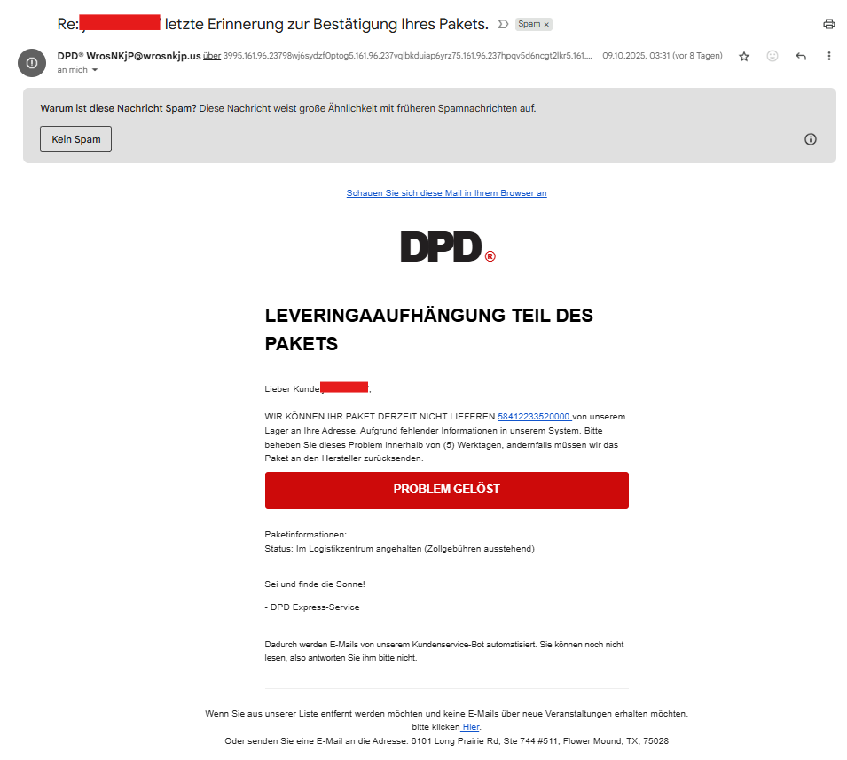
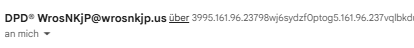
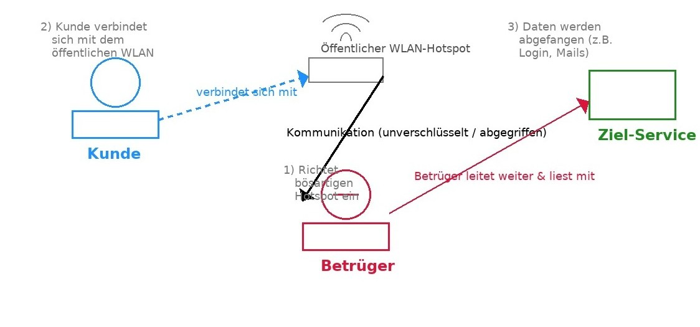

Anhand konkreter Szenarien und klar erkennbarer Merkmale seht ihr, wie solche Angriffe ablaufen, woran man sie erkennt und welche Gefahren für Unternehmen und Nutzer entstehen.
Malware
Ablauf: Einstieg → Verbreitung → Wirkung → Entdeckung (Kill-Switch)
Es zeigt, wie ein einzelner infizierter Rechner eine weltweite Kettenreaktion auslösen kann.
- Einstieg: Technischer Fehler
- Die Malware nutzt eine Sicherheitslücke („EternalBlue“) in ungepatchten Windows-Systemen. Ein infizierter Rechner (z. B. ein Firmen-PC ohne Update) wird zur Eintrittspforte.
- Verbreitung: Ausbreitung
- Der Schadcode verbreitet sich wie ein Wurm automatisch an andere Rechner im selben Netzwerk. Dadurch wird in kurzer Zeit eine riesige Zahl von Systemen infiziert.
- Wirkung: Schaden
- Auf den betroffenen Computern werden Dateien verschlüsselt. Eine Lösegeldforderung („Ransom“) erscheint – viele Dienste, Firmen und Krankenhäuser sind lahmgelegt.
- Entdeckung („Kill-Switch“): Abwehr
- Ein Sicherheitsforscher entdeckt im Programmcode eine bestimmte Internet-Adresse. Als er sie registriert, stoppt die Malware ihre Ausbreitung – das war der „Kill-Switch“. Trotzdem bleiben viele Systeme unbrauchbar.
Betriebsstörungen, Finanzbetrug, Identitätsdiebstahl, Malware-Injektion
Spam

Dies ist ein Musterbeispiel für eine Spam- bzw. Phishing-Mail, die eine täuschend echte Wirkung erzielen soll.
Im Folgenden werden die Merkmale auf dem Bild erläutert und deren Bedeutung dargelegt.
- Warten Sie Nicht! Ihr Angebot Läuft In Stunden Ab!
- Betreffzeile erzeugt künstliche Dringlichkeit, um schnelles Handeln zu erzwingen.
- Absender: deutschepost.de/de Noreply-t3pug0Fr@t3pug0fr.de
- Verdächtige, lange oder zufällige Adresse – kein offizieller Firmenabsender. Die richtige Adresse lautet: „@deutschepost.de“. Aus diesem Grund ist es wichtig auf den Aufbau der Absenderadresse zu achten.
- Spam-Hinweis: Diese Nachricht weist große Ähnlichkeit mit früheren Spamnachrichten auf.
- Mailanbieter erkennt bekannte Muster und markiert sie automatisch als verdächtig.

- Angebot: „Paket mit 50 Briefmarken“ – angeblich kostenloses Gewinnversprechen.
- lockt mit Gratisangeboten oder Belohnungen, um Neugier oder Gier auszunutzen.
- Typisches Mittel, um Klicks und Daten zu erhalten.
- Handlungsaufforderung: Großer Button „JETZT SICHERN“.
- Farbige Buttons ziehen Aufmerksamkeit auf sich.
- Klick führt meist auf gefälschte Websites oder Datenerfassungsseiten.
- der Aufruf solcher Links birgt das Risiko, dass Nutzer:innen ungewollt ihre persönlichen Daten auf einer Phishing-Seite preisgeben.
- Sprache und Stil: Ungewöhnliche Großschreibung und kleine Grammatikfehler → "Warten Sie Nicht! Ihr Angebot Läuft in Stunden Ab!" oder "einen Paket mit 50 Briefmarken".
- Oft ein Hinweis auf automatische Übersetzung oder unseriöse Herkunft.
- Kein Impressum
- In der E-Mail finden sich keine allgemeinen Kontaktinformationen wie die Firmenadresse, Telefonnummer oder offizielle Firmennummer.
Finanzbetrug, Identitätsdiebstahl, Malware-Injektion
Phishing

Diese E-Mail ist ein klassisches Beispiel für eine Phishing-Nachricht, die sich als DPD-Paketbenachrichtigung tarnt, um den Empfänger zu täuschen und vermutlich auf eine betrügerische Website zu lenken oder persönliche Daten (z. B. Kreditkartendaten) zu stehlen. Im weiteren Verlauf werden zunächst die einzelnen Merkmale auf dem Bild erläutert, gefolgt von einer Erläuterung ihrer jeweiligen Bedeutungen.
- Absenderadresse ist verdächtig: DPD™ WrosNKjP@wrosnkjp.us
- Kein offizieller DPD-Absender – seriöse Unternehmen nutzen Domains wie @dpd.de
- Die Domain wrosnkjp.us ist nicht vertrauenswürdig, sieht zufällig generiert aus → Erkennungsmerkmal Nr. 1 für Phishing

- Betreff wirkt dramatisch & druckausübend: Letzte Erinnerung zur Bestätigung Ihres Pakets
- erzeugt künstlichen Handlungsdruck („Letzte Erinnerung“)
- Typisch für Phishing: psychologischer Druck um Nutzer zu schnellen und unüberlegten Klicks zu bewegen
- Sprache & Formulierungen sind unprofessionell: „LEVERINGAUFHÄNGUNG TEIL DES PAKETS“
- Dieses Wort ist eine Mischung aus Deutsch und Niederländisch
- „Levering“ = Lieferung (niederländisch)
- „Aufhängung“ = im Kontext falsch
- Weitere sprachliche Merkmale:
- „Sei und finde die Sonne!“ – völlig unpassend
- „DPD Express-Service“ – untypische Signatur
- Verdächtige Links: Link z. B.: 58412233520000
- Es sieht wie eine Paketnummer aus, ist aber verlinkt – unbezweifelbar zu einer gefälschten Website
- Der große rote Button "PROBLEM GELÖST" ist ein Klickköder (Nach Klicks fischen), genau zu einer gefälschten DPD-Anmeldeseite oder Zahlungsseite
- Aufforderung zur Aktion innerhalb weniger Tage: „Bitte beheben Sie dieses Problem innerhalb von (5) Werktagen“
- Typische Phishing-Taktik: kurze Frist → Druck → unüberlegte Handlung
- Fußzeile mit irreführenden Abmeldehinweisen: „Wenn Sie aus unserer Liste entfernt werden möchten… klicken Sie hier“
- Diese Links führen oft nicht zur Abmeldung, sondern zu weiterer Datenerhebung oder Malware
- Auch die Adresse in den USA (Flower Mound, TX) ist nicht mit DPD verbunden
- Kein Impressum
- In der E-Mail finden sich keine allgemeinen Kontaktinformationen wie die Firmenadresse, Telefonnummer oder offizielle Firmennummer.
Kontoübernahmen, Finanzbetrug, Identitätsdiebstahl, Malware-Injektion
Man-in-the-Middle-Angriff

Kurzfassung:
Das Diagramm zeigt einen Man-in-the-Middle-Angriff an einem öffentlichen WLAN-Hotspot.
Ein Angreifer fängt die Kommunikation zwischen Nutzer und Ziel-Service ab, liest mit oder verändert Daten und leitet sie weiter.
Wichtige Bauteile und Bedeutung:
-
Kunde (blau):
- Nutzer mit Laptop/Smartphone, der sich mit einem WLAN verbindet.
-
Öffentlicher WLAN-Hotspot (grau):
- Der Access-Point, über den die Verbindung läuft; oft ungesichert oder leicht zu imitieren.
-
Betrüger (rot):
Der Angreifer, der als "Man in the Middle" agiert.- Evil Twin / Rogue AP: stellt ein bösartiges WLAN bereit.
- kann Daten mitschneiden, weiterleiten oder verändern.
-
Ziel-Service (grün):
- Der eigentliche Server oder Dienst (z. B. E-Mail, Online-Banking).
-
Kommunikationspfade (Pfeile/ Linien):
- Gestrichelter Pfeil: Kunde → Hotspot (Verbindungsaufbau).
- Schwarze Linie: Weiterleitung/Abgriff.
- Roter Pfeil: Betrüger leitet weiter & liest mit.
Ablauf (Schritte):
1) Betrüger richtet bösartigen Hotspot ein.
2) Kunde verbindet sich (ohne zu prüfen).
3) Daten werden abgefangen (z. B. Login, Mails) und ggf. missbraucht.
Typische Techniken:
- Evil Twin
- Wie beim Phishing → Der Kunde verbindet sich mit diesem falschen Hotspot - der Betrüger sitzt damit automatisch „in der Mitte“ und kann den gesamten Netzwerkverkehr sehen oder manipulieren.
- Wie erkennt man es?
- Mehrere Netzwerke mit fast identischem Namen erscheinen.
- Kein Passwort / offenes Netzwerk, obwohl das echte Netzwerk ein Passwort hätte.
- Der Hotspot fordert seltsame Formulare vor dem Zugriff.
- ARP-Spoofing / DNS-Spoofing
- Selbst wenn der Kunde scheinbar mit dem richtigen Hotspot verbunden ist, sorgt ARP-Spoofing dafür, dass Pakete über das Gerät des Betrügers gehen - er liest mit oder verändert Daten.
Der Kunde ruft z. B. „mail.meinefirma.de“ auf, wird aber zu einer Angreifer-Adresse geleitet. Login-Seiten können identisch aussehen - Daten werden eingegeben und abgegriffen. - Wie erkennt man es?
- Zertifikat-/HTTPS-Warnungen können auftreten, wenn Inhalte manipuliert werden.
- Unerwartete Inhalte oder Login-Seiten mit leichtem Unterschied.
- Unerklärliche Verzögerungen/Verbindungsabbrüche.
- Selbst wenn der Kunde scheinbar mit dem richtigen Hotspot verbunden ist, sorgt ARP-Spoofing dafür, dass Pakete über das Gerät des Betrügers gehen - er liest mit oder verändert Daten.
- SSL-Strip / gefälschte Zertifikate
- Der Kunde glaubt eine normale Verbindung zu haben; tatsächlich liest der Angreifer die entschlüsselten Daten aus - Passwörter, Formulardaten, Cookies.
- Wie erkennt man es?
- Browser-Warnungen wegen ungültigem Zertifikat.
- Kein sichtbares Schloss in der Adressleiste, obwohl erwartet.
- Unerwartete Redirects von https:// zu http://.
- Session-Hijacking (Cookies)
- Der Betrüger sammelt Session-Cookies (z. B. durch Abgreifen oder Malware-Injektion) und nutzt sie um ohne Passwort im Konto zu agieren.
- Wie erkennt man es?
- Plötzliche Login-Hinweise / Benachrichtigungen über neue Geräte.
- Ungewöhnliche Aktivitäten im Konto (E-Mails löschen, Einkäufe).
- Malware
- Was man nicht ausschließen darf, ist ein Malware-Angriff. Selbst wenn Netzwerkverschlüsselung vorhanden ist, manipuliert die Schadsoftware die Daten vor der Verschlüsselung - der Angreifer sieht alles.
- Wie erkennt man es?
- Unerwartete Popup-Fenster, plötzlich andere Inhalte auf bekannten Seiten.
- Sicherheitssoftware warnt oder unbekannte Browser-Erweiterungen sind aktiv.
Gefahren:
Kontoübernahmen, Finanzbetrug, Identitätsdiebstahl, Malware-Injektion
DoS- und DDoS-Angriffe
Protokollbasierte Angriffe
Wie ein Cyberangriff die Bibliothek stört
Die Idee:
Wenn jemand eine Schwachstelle im System der Bibliothek ausnutzt, kann der Betrieb gestört werden – genauso wie bei einem Cyberangriff auf ein Netzwerk.
- 1. Öffentliche Bibliothek (links oben, blau) Symbol: ein rechteckiges Gebäude mit Bücherregalen
- 2. Besucher (unten links) Symbol: kleine Person mit gelbem Kopf (Besucherfigur)
- 3. Bibliotheks-Computersystem (Mitte, türkis) Symbol: ein großer Kasten mit Monitor, Datenbank und Warnsymbol
- 4. Netzwerk / Protokoll (oben rechts, violett) Symbol: ein Kasten mit einer „Versions-Lücke“ (ellipse-förmiger Bereich)
- 5. Angreifende Person (unten rechts, rot) Symbol: dunkle Figur "mit Kapuze" (klassisches Hacker-Symbol)
- 6. Pfeile und Verbindungslinien
- Graue Pfeile → normale Kommunikation
- Roter Blitz & roter Pfeil → Angriff
Bedeutung: steht für eine reale Institution oder Organisation – also das Zielsystem, das einen IT-Dienst anbietet.
In der Analogie: die Bibliothek betreibt ein Computersystem, das Besucher nutzen.
In der Realität: das ist z. B. ein Unternehmen, eine Website oder eine Behörde, die Server betreibt.
Bedeutung: normale Benutzer:innen des Systems, die den Service verwenden wollen.
In der Analogie: Besucher möchten Bücher suchen oder ausleihen.
In der IT-Welt: Das sind reguläre Nutzer, die etwa Webseiten aufrufen oder E-Mails verschicken.
Bedeutung: das zentrale Computersystem oder der Server, über den alle Anfragen laufen.
In der Analogie: das ist das Programm, das Buchdaten verwaltet.
In der IT-Welt: das ist der Server oder die Webanwendung, die alle Daten verarbeitet.
Im Inneren sieht man:
📊 Monitor / Suchindex → Suchfunktion, mit der Besucher Bücher finden.
💾 Datenbank → Speicherung der Buchinformationen.
⚠️ Rotes Warnsymbol (mit !) → zeigt an, dass eine Störung oder Überlastung vorliegt.
Bedeutung: Das Netzwerk, über das Daten übertragen werden oder das Kommunikationsprotokoll (z. B. TCP/IP, HTTP)
In der Analogie: das ist wie der Kommunikationsweg zwischen Bibliothek und Besuchern.
In der IT-Welt: hier können Sicherheitslücken oder veraltete Protokolle vorkommen, die Angreifer ausnutzen.
Bedeutung: eine Person oder Gruppe, die aktiv versucht, eine Schwachstelle auszunutzen.
Text: „nutzt Schwachstelle im Protokoll aus“
Das bedeutet: Sie greift das Netzwerk oder die Software gezielt an.
In der IT-Welt: Das kann ein DDoS-Angriff, ein Exploit, Malware oder ein gezielter Netzwerkangriff sein. In dem Fall ist es ein DDoS-Angriff oder DoS-Angriff.
- → Besucher → System → Netzwerk
- → repräsentiert den regulären Datenfluss
- → zeigt den Weg des Angriffs vom Angreifer über die Schwachstelle ins System
- → der Blitz symbolisiert die Störung (z. B. Überlastung oder Datenchaos)
Angriff → Schwachstelle → Systemstörung → Auswirkungen auf Benutzer Gefahren:
Betriebsstörungen, Identitätsdiebstahl, Malware-Injektion